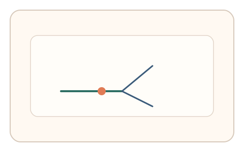
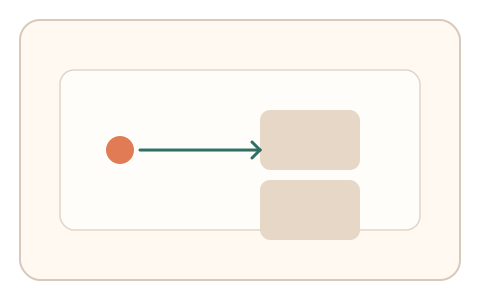
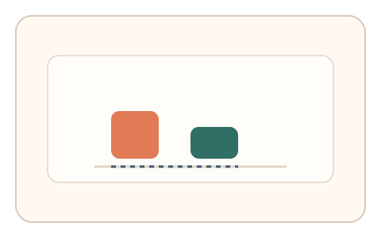

#142
F：意图/现实耦合 × 异步/随机插入（路径/预测误差）
已扩展
状态驱动分岔
依据滚动或指针速度触发不同微任务，比较分岔前后预测误差与设备基线。
概念原文
依据当前滚动速度/指针速度触发不同微任务，系统比较分岔前后预测误差并与设备基线比对。
用实时状态分岔打断脚本的固定策略。
研究背景
人类在状态切换中会表现出可预测的误差与适应过程。动态分岔可打断脚本固定策略，并捕捉状态驱动的预测误差特征。
核心机制
- 监测实时状态（滚动/指针速度）。
- 达到阈值时触发不同微任务分支。
- 记录分岔前后预测误差与适应时间。
- 与设备基线及历史分布比较。
用户流程
- 步骤 1：用户进行连续操作，系统监测状态。
- 步骤 2：触发分岔任务并完成。
- 步骤 3：系统分析预测误差与适应曲线。
判定信号
分岔触发前状态分布
真实用户状态波动具有稳定区间。
分岔后预测误差
适应过程会产生可解释的误差结构。
判定逻辑
状态分布与分岔后误差需匹配基线；无适应或误差恒定判异常。
对抗面
- 脚本保持固定速度触发特定分支
- 提前推断阈值并模拟响应
防御与缓解
- 随机化分岔阈值与任务类型
- 隐藏分岔触发规则
- 加入意外分支与回归检查
可达性与风险
提供低强度阈值与手动触发选项。
- 设备性能差异影响状态测量
- 分岔任务过多导致困惑
可视化状态

状态 1：状态监测
根据速度状态触发分岔。

状态 2：分岔任务
进入不同微任务分支。

状态 3：误差比较
比较分岔前后预测误差。
参考资料
Internal model (motor control)
说明运动预测与误差机制。
Reaction time
说明状态变化下的反应时特征。